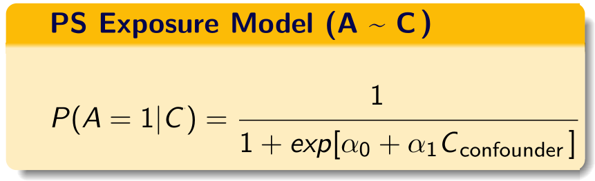
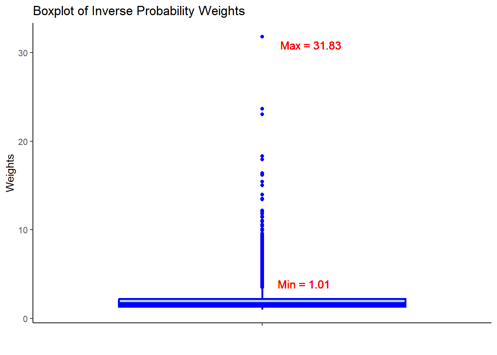
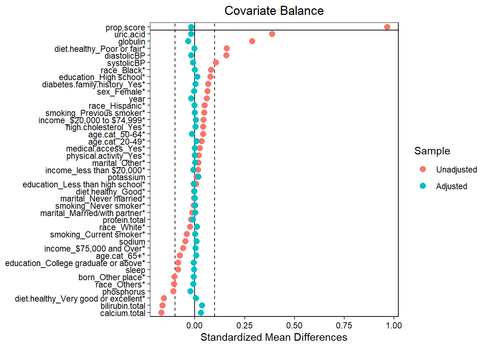

flowchart LR A[NHANES] --> C1(2013-2014 cycle) --> ss1(10,175 \nparticipants) A --> C2(2015-2016 cycle) --> ss2(9,971 \nparticipants) A --> C3(2017-2018 cycle) --> ss3(9,254 \nparticipants) ss1 --> ss(7,585 \nafter \nimposing \neligibility \ncriteria) ss2 --> ss ss3 --> ss style A fill:#FFA500; style C1 fill:#FFA500; style C2 fill:#FFA500; style C3 fill:#FFA500; style ss1 fill:#FFA500; style ss2 fill:#FFA500; style ss3 fill:#FFA500; style ss fill:#FFA500;
2 Propensity score
Propensity Score Analysis
Propensity score analysis is a method for adjusting for confounding in observational studies by balancing treatment or exposure groups based on the probability of receiving treatment, using investigator-specified measured covariates.
2.1 Propensity Score Analysis
There are four approaches to propensity score (PS) analysis:
- Weighting: Assign weights to individuals based on their propensity scores to create a pseudo-population where treatment groups are balanced.
- Matching: Match individuals in the treatment group with individuals in the control group based on their propensity scores.
- Stratification: Divide the sample into strata based on the propensity score and compare outcomes within each stratum.
- Covariate Adjustment: Include the propensity score as a covariate in a outcome model to adjust for confounding.
2.2 Propensity Score Weighting
For this demonstration, we will focus on the Weighting approach. The other approaches are not covered in this demonstration, but they can be implemented using similar steps as shown below.
There are four steps in propensity score weighting:
- Data preparation: Prepare the data by creating the treatment/exposure, outcome, and covariates.
- Specifying PS & fit model: Specify the propensity score model with investigator-specified measured covariates and fit the model
- Weighting: Convert PS to inverse probability weights (IPW).
- Covariate balance: Check the balance of covariates between treatment groups after weighting.
- Estimating treatment effect: Fit the outcome model on the pseudo population.
2.2.1 Step 0: Data preparation
2.2.1.1 Creating Analytic data
3 cycles of NHANES datasets were - downloaded from the US CDC website - recoded for consistency, and - merged together to make an analytic data.
Details of data download process, and recoding and merging are discussed in Appendix.
Our study population was restricted to the U.S. population who were
- 20 years or older and
- not pregnant at the time of survey data collection, and
- who had available International Classification of Diseases (ICD) codes to ensure we can extract sufficient proxy information for the analysis (discussed in step 1).
To simplify the analysis, we only considered complete case data.
# Table 1
library(tableone)
tab1 <- CreateTableOne(vars = investigator.specified.covariates,
strata = "exposure",
data = hdps.data,
test = FALSE)
print(tab1, showAllLevels = TRUE, noSpaces = TRUE, quote = FALSE, smd = TRUE)
#> Stratified by exposure
#> level 0
#> n 4186
#> age.cat (%) 20-49 1246 (29.8)
#> 50-64 1274 (30.4)
#> 65+ 1666 (39.8)
#> sex (%) Male 1958 (46.8)
#> Female 2228 (53.2)
#> education (%) Less than high school 819 (19.6)
#> High school 2147 (51.3)
#> College graduate or above 1220 (29.1)
#> race (%) White 1946 (46.5)
#> Black 699 (16.7)
#> Hispanic 791 (18.9)
#> Others 750 (17.9)
#> marital (%) Never married 555 (13.3)
#> Married/with partner 2525 (60.3)
#> Other 1106 (26.4)
#> income (%) less than $20,000 846 (20.2)
#> $20,000 to $74,999 2019 (48.2)
#> $75,000 and Over 1321 (31.6)
#> born (%) Born in US 2989 (71.4)
#> Other place 1197 (28.6)
#> year (mean (SD)) 8.95 (0.82)
#> diabetes.family.history (%) No 3515 (84.0)
#> Yes 671 (16.0)
#> medical.access (%) No 299 (7.1)
#> Yes 3887 (92.9)
#> smoking (%) Never smoker 2249 (53.7)
#> Previous smoker 1143 (27.3)
#> Current smoker 794 (19.0)
#> diet.healthy (%) Poor or fair 970 (23.2)
#> Good 1723 (41.2)
#> Very good or excellent 1493 (35.7)
#> physical.activity (%) No 3463 (82.7)
#> Yes 723 (17.3)
#> sleep (mean (SD)) 7.50 (1.57)
#> uric.acid (mean (SD)) 5.26 (1.40)
#> protein.total (mean (SD)) 7.08 (0.47)
#> bilirubin.total (mean (SD)) 0.56 (0.28)
#> phosphorus (mean (SD)) 3.72 (0.56)
#> sodium (mean (SD)) 139.62 (2.68)
#> potassium (mean (SD)) 4.03 (0.39)
#> globulin (mean (SD)) 2.86 (0.47)
#> calcium.total (mean (SD)) 9.41 (0.38)
#> systolicBP (mean (SD)) 127.28 (20.07)
#> diastolicBP (mean (SD)) 69.82 (11.69)
#> high.cholesterol (%) No 2176 (52.0)
#> Yes 2010 (48.0)
#> Stratified by exposure
#> 1 SMD
#> n 3399
#> age.cat (%) 1126 (33.1) 0.157
#> 1176 (34.6)
#> 1097 (32.3)
#> sex (%) 1373 (40.4) 0.129
#> 2026 (59.6)
#> education (%) 686 (20.2) 0.200
#> 2009 (59.1)
#> 704 (20.7)
#> race (%) 1496 (44.0) 0.368
#> 846 (24.9)
#> 804 (23.7)
#> 253 (7.4)
#> marital (%) 433 (12.7) 0.041
#> 2006 (59.0)
#> 960 (28.2)
#> income (%) 742 (21.8) 0.130
#> 1783 (52.5)
#> 874 (25.7)
#> born (%) 2776 (81.7) 0.244
#> 623 (18.3)
#> year (mean (SD)) 8.99 (0.81) 0.059
#> diabetes.family.history (%) 2626 (77.3) 0.170
#> 773 (22.7)
#> medical.access (%) 157 (4.6) 0.107
#> 3242 (95.4)
#> smoking (%) 1805 (53.1) 0.129
#> 1085 (31.9)
#> 509 (15.0)
#> diet.healthy (%) 1331 (39.2) 0.420
#> 1384 (40.7)
#> 684 (20.1)
#> physical.activity (%) 2747 (80.8) 0.049
#> 652 (19.2)
#> sleep (mean (SD)) 7.37 (1.68) 0.084
#> uric.acid (mean (SD)) 5.83 (1.54) 0.387
#> protein.total (mean (SD)) 7.08 (0.45) 0.019
#> bilirubin.total (mean (SD)) 0.51 (0.30) 0.163
#> phosphorus (mean (SD)) 3.66 (0.57) 0.107
#> sodium (mean (SD)) 139.49 (2.66) 0.048
#> potassium (mean (SD)) 4.04 (0.39) 0.009
#> globulin (mean (SD)) 2.99 (0.46) 0.287
#> calcium.total (mean (SD)) 9.34 (0.38) 0.168
#> systolicBP (mean (SD)) 129.28 (17.69) 0.106
#> diastolicBP (mean (SD)) 71.68 (11.98) 0.157
#> high.cholesterol (%) 1624 (47.8) 0.084
#> 1775 (52.2)2.2.2 Step 1: Specifying PS & fit model
We build the propensity score model in this data using the investigator-specified covariates.

C = investigator-specified covariates.
If you are somewhat unfamiliar with propensity score paradigm, look at tutorials dedicated towards that topic. There are additional tutorials also talking about propensity score weighting.
2.2.2.1 PS model specification
Now let us create the propensity score formula with the investigator-specified covariates:
covform <- paste0(investigator.specified.covariates, collapse = "+")
ps.formula <- as.formula(paste0("exposure", "~", covform))
ps.formula
#> exposure ~ age.cat + sex + education + race + marital + income +
#> born + year + diabetes.family.history + medical.access +
#> smoking + diet.healthy + physical.activity + sleep + uric.acid +
#> protein.total + bilirubin.total + phosphorus + sodium + potassium +
#> globulin + calcium.total + systolicBP + diastolicBP + high.cholesterol- Only use investigator specified covariates to build the formula.
- During the construction of the propensity score model, researchers should consider incorporating additional model specifications, such as interactions and polynomials, if they are deemed necessary.
2.2.2.2 Fit the PS model
require(WeightIt)
W.out <- weightit(ps.formula,
data = hdps.data,
estimand = "ATE",
method = "ps")- Use that formula to estimate propensity scores.
- In this demonstration, we did not use
stabilize = TRUE. However, stabilized propensity score weights often reduce the variance of treatment effect estimates.
2.2.2.3 Obtain PS
hdps.data$ps <- W.out$ps
ggplot(hdps.data, aes(x = ps, fill = factor(exposure))) +
geom_density(alpha = 0.5) +
scale_fill_manual(values = c("darkblue", "darkred")) +
theme_classic()
Check propensity score overlap in both exposure groups.
2.2.3 Step 2: Weighting
As mentioned, we only talk about inverse probability weighting in our current context.
hdps.data$w <- W.out$weights
summary(hdps.data$w)
#> Min. 1st Qu. Median Mean 3rd Qu. Max.
#> 1.006 1.325 1.617 2.006 2.187 31.825ggplot(hdps.data, aes(x = "", y = w)) +
geom_boxplot(fill = "lightblue",
color = "blue",
size = 1) +
geom_text(aes(x = 1, y = max(w),
label = paste0("Max = ", round(max(w), 2))),
vjust = 1.5,
hjust = -0.3,
size = 4,
color = "red") +
geom_text(aes(x = 1, y = min(w),
label = paste0("Min = ", round(min(w), 2))),
vjust = -2.5,
hjust = -0.3,
size = 4,
color = "red") +
ggtitle("Boxplot of Inverse Probability Weights") +
xlab("") +
ylab("Weights") +
theme_classic()
- Check the summary statistics of the weights to assess whether there are extreme weights. Less extreme weights now?
2.2.4 Step 3: Covariate balance
require(cobalt)
love.plot(x = W.out,
thresholds = c(m = .1),
var.order = "unadjusted",
stars = "raw")
#> Warning: No shared levels found between `names(values)` of the manual scale and the
#> data's fill values.
- Assess balance against SMD 0.1. Still balanced?
- Predictive measures such as c-statistics are not helpful in this context (Westreich et al. 2011): “use of the c-statistic as a guide in constructing propensity scores may result in less overlap in propensity scores between treated and untreated subjects”!
2.2.5 Step 4: Estimating treatment effect
2.2.5.1 Set outcome formula
out.formula <- as.formula(paste0("outcome", "~", "exposure"))
out.formula
#> outcome ~ exposureWe are again using a crude weighted outcome model here.
2.2.5.2 Obtain OR
fit <- glm(out.formula,
data = hdps.data,
weights = W.out$weights,
family= binomial(link = "logit"))
fit.summary <- summary(fit)$coef["exposure",
c("Estimate",
"Std. Error",
"Pr(>|z|)")]
fit.summary[2] <- sqrt(sandwich::sandwich(fit)[2,2])
require(lmtest)
conf.int <- confint(fit, "exposure", level = 0.95, method = "hc1")
fit.summary_with_ci.ps <- c(fit.summary, conf.int)
knitr::kable(t(round(fit.summary_with_ci.ps,2))) | Estimate | Std. Error | Pr(>|z|) | 2.5 % | 97.5 % |
|---|---|---|---|---|
| 0.68 | 0.07 | 0 | 0.61 | 0.76 |
2.2.5.3 Obtain RD
fit <- glm(out.formula,
data = hdps.data,
weights = W.out$weights,
family= gaussian(link = "identity"))
fit.summary <- summary(fit)$coef["exposure",
c("Estimate",
"Std. Error",
"Pr(>|t|)")]
fit.summary[2] <- sqrt(sandwich::sandwich(fit)[2,2])
require(lmtest)
conf.int <- confint(fit, "exposure", level = 0.95, method = "hc1")
fit.summary_with_ci.ps.rd <- c(fit.summary, conf.int)
knitr::kable(t(round(fit.summary_with_ci.ps.rd,2))) | Estimate | Std. Error | Pr(>|t|) | 2.5 % | 97.5 % |
|---|---|---|---|---|
| 0.13 | 0.01 | 0 | 0.11 | 0.14 |